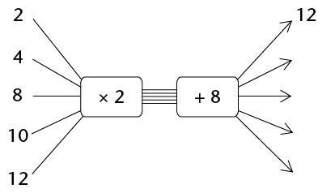
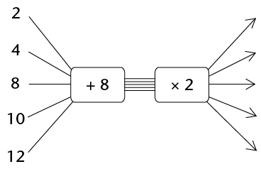

Algebraïese uitdrukkings
In hierdie hoofstuk gaan jy leer hoe om algebraïese uitdrukkings te vereenvoudig deur hulle uit te brei. Uitbreiding van ’n algebraïese uitdrukking stel jou in staat om die vorm van ’n uitdrukking te verander sonder om die uitvoerwaardes wat dit gee te verander.
Wanneer jy berekeninge wil vereenvoudig en uitdrukkings wil vergelyk, kan dit nuttig wees om ’n uitdrukking in ’n ander vorm te herskryf. Die twee metodes wat ons hoofsaaklik gebruik om uitdrukkings te vereenvoudig, is die volgende: ons kombineer gelyksoortige terme en/of gebruik die verspreidingseienskap (of distributiewe eienskap).
Brei algebraïese uitdrukkings uit
Vermenigvuldig ’n paar keer of net een keer: dit is jou keuse
-
- Bereken
\(5 \times 13\) en
\(5 \times 87\) en tel die twee antwoorde bymekaar.
- Tel 13 en 87 bymekaar en vermenigvuldig dan die
antwoord met 5.
- As jy nie dieselfde antwoord vir vrae 1 (a) en (b) kry
nie, het jy ’n fout gemaak.
Doen jou werk oor tot jy dit regkry.
- Bereken
\(5 \times 13\) en
\(5 \times 87\) en tel die twee antwoorde bymekaar.
Die woord distribueer beteken âom te verspreiâ. Die distributiewe eienskappe of verspreidingseienskappe kan soos volg beskryf word:
\(a(b + c) = ab +ac\) en
\(a(b - c) = ab -ac\) en
waar \(a\), \(b\) en \(c\) enige getalle kan wees.
Die feit dat jy dieselfde antwoord vir vrae 1 (a) en (b) kry as jy reg werk, is ’n voorbeeld van ’n bepaalde eienskap van optel en vermenigvuldiging wat die verspreidings-eienskap of distributiewe eienskap genoem word. Jy gebruik hierdie eienskap elke keer as jy ’n getal in dele vermenigvuldig. Byvoorbeeld, jy kan \(3 \times 24\) bereken as
\(3 \times 20\) en \(3 \times 4\), en dan die twee antwoorde bymekaartel:
\(3 \times 24 = 3 \times 20 + 3 \times 4\)
Wat jy in vraag 1 gesien het, is dat \(5 \times 100 = 5 \times 13 + 5 \times 87\).
Dit kan ook uitgedruk word deur \(5(13 + 87)\) te skryf.
-
- Bereken
\(10 \times 56\).
- Bereken
\(10 \times 16 + 10 \times
40\).
- Bereken
\(10 \times 56\).
- Skryf enige twee getalle kleiner as 100 neer. Kom ons
noem hulle \(x\) en \(y\).
- Tel jou twee getalle bymekaar en vermenigvuldig die antwoord met 6.
- Bereken
\(6 \times x\) en
\(6 \times
y\) en tel die twee antwoorde bymekaar.
- As jy nie dieselfde antwoorde vir (a) en (b) kry nie, het jy iewers ’n fout gemaak. Soek die fout en maak dit reg.
- Tel jou twee getalle bymekaar en vermenigvuldig die antwoord met 6.
- Voltooi die tabel.
-
\(x\)
1
2
3
4
5
\(3(x + 2)\)
\(3x + 6\)
\(3x + 2\)
\(3(x - 2)\)
\(3x - 6\)
\(3x - 2\)
- As jy nie dieselfde antwoorde vir die uitdrukkings \(3(x + 2)\) en \(3x + 6\), kry nie en/of nie dieselfde antwoorde vir \(3(x-2)\) en \(3x -6\), kry nie, het jy iewers ’n fout gemaak. Werk die antwoorde weer ’n keer uit.
In algebra skryf ons gewoonlik \(3(x + 2)\) in plaas van \(3 \times (x + 2)\). Die uitdrukking \(3 \times (x + 2)\) beteken nie jy moet eers met 3 vermenigvuldig wanneer jy die uitdrukking vir ’n bepaalde waarde van \(x\) evalueer nie. Die hakies sê vir jou die eerste ding wat jy moet doen, is om die waarde(s) van \(x\) by 2 te tel, en dan die antwoord met 3 te vermenigvuldig.
Maar, in plaas daarvan om eers die waardes tussen hakies bymekaar te tel en dan die antwoord met 3 te vermenigvuldig, kan ons bloot \(3 \times x + 3 \times 2 = 3x + 6\) bereken, soos in die tabel gewys word.
- Watter van die uitdrukkings in die tabel is
ekwivalent aan mekaar? Verduidelik.
- Vir watter waarde(s) van
\(x\) is
\(3(x + 2) = 3x + 2\)?
- Probeer om ’n waarde van
\(x\) te vind sodat
\(3(x + 2) \neq 3x + 6\).
-
As vermenigvuldiging die laaste stap in die evaluering van ’n algebraïese uitdrukking is, word die uitdrukking ’n produkuitdrukking of, in kort, ’n produk genoem. Die manier waarop jy die uitdrukking \(3(x + 2)\) in die tabel geëvalueer het, is ’n voorbeeld van ’n produkuitdrukking.
-
- Bepaal die waarde van
\(5x + 15\) as
\(x = 6\).
- Bepaal die waarde van
\(5(x + 3)\) as
\(x = 6\).
- Kan ons die uitdrukking
\(5x + 15\)
gebruik om die waarde van
\(5(x + 3)\) vir enige
waardes van \(x\) te bereken? Verduidelik.
- Bepaal die waarde van
\(5x + 15\) as
\(x = 6\).
- Voltooi die vloeidiagramme.
-

-

-

-
-
- Watter van die vloeidiagramme hier bo lewer dieselfde
uitvoergetalle?
- Skryf ’n algebraïese uitdrukking vir elk van die
vloeidiagramme in vraag 6.
- Watter van die vloeidiagramme hier bo lewer dieselfde
uitvoergetalle?
Produkuitdrukkings en somuitdrukkings
- Voltooi die volgende:
- \( (3 + 6) + (3 + 6) + (3 + 6) + (3 + 6) + (3 + 6) \\ = \text{______} \times \text{(____________)} \)
- \( (3 + 6) + (3 + 6) + (3 + 6) + (3 + 6) + (3 + 6) \\ = (3 + 3 + \text{______}) + \text{(__________________)} \\ \text{(______} \times \text{______)} \text{(______} \times \text{______)} \)
- Voltooi die volgende:
- \((3x + 6) + (3x + 6) + (3x + 6) + (3x + 6) + (3x + 6) \\ = \text{______} \times \text{(____________)} \)
- \( (3x + 6) + (3x + 6) + (3x + 6) + (3x + 6) + (3x + 6) \\ = (3x + 3x \text{______}) + \text{(__________________)} \\ \text{(______} \times \text{______)} \text{(______} \times \text{______)} \)
- Skryf vir elke uitdrukking ’n
uitdrukking sonder hakies wat dieselfde resultate sal gee.
- \(3(x + 7)\)
- \(10(2x + 1)\)
- \(x(4x + 6)\)
- \(3(2p + q)\)
- \(t(t + 9)\)
- \(x(y + z)\)
- \(2b(b + a - 4)\)
- \(k^2(k - m)\)
- \(3(x + 7)\)
Die proses om produkuitdrukkings as somuitdrukkings te skryf, word uitbreiding genoem. Dit word soms ook vermenigvuldiging van algebraïese uitdrukkings genoem.
-
- Voltooi die tabel vir die gegewe waardes van
\(x,~y\) en \(z\).
\(3(x + 2y + 4z)\)
\(3x + 6y + 12z\)
\(3x + 2y + 4z\)
\(x = 1\)
\(y = 2\)
\(z = 3\)
\(x = 10\)
\(y = 20\)
\(z = 30\)
\(x = 23\)
\(y = 60\)
\(z = 100\)
\(x = 14\)
\(y = 0\)
\(z = 1\)
x = 5
\(y = 9\)
\(z = 32\)
- Watter somuitdrukking en produkuitdrukking is
ekwivalent?
- Voltooi die tabel vir die gegewe waardes van
\(x,~y\) en \(z\).
- Skryf vir elke uitdrukking ’n ekwivalente
uitdrukking sonder hakies.
- \(2(x^2 + x + 1)\)
- \(p(q + r + s)\)
- \(-3(x + 2y + 3z)\)
- \(x(2x^2 + x + 7)\)
- \( 6x(8 - 2x)\)
- \(12x(4 - x)\)
- \(3x(8x - 5) - 4x(6x - 5)\)
- \(10x(3x(8x - 5) - 4x(6x - 5))\)
- \(2(x^2 + x + 1)\)
Vereenvoudig algebraïese uitdrukkings
Brei gelyksoortige terme uit, herrangskik en kombineer hulle
- Skryf die kortste moontlike ekwivalente
uitdrukking sonder hakies.
- \(x + 2(x + 3) \)
- \(5(4x + 3) + 5x\)
- \(5(x + 5) + 3(2x + 1) \)
- \((5 + x)^2\)
- \(-3(x^2 + 2x - 3) + 3(x2 + 4x)\)
- \(x(x - 1) + x + 2\)
- \(x + 2(x + 3) \)
As jy nie seker is of jy ’n uitdrukking korrek vereenvoudig het nie, moet jy jou werk altyd kontroleer deur die oorspronklike uitdrukking en die vereenvoudigde uitdrukking vir ’n paar waardes van die veranderlikes te evalueer.
-
- Evalueer
\(x(x + 2) + 5x^2 - 2x\) vir
\(x = 10\).
- Evalueer
\(6x^2\) vir
\(x = 10\).
- Kan ons die uitdrukking
\(6x^2\) gebruik om die waardes van die uitdrukking
\(x(x + 2) + 5x^2 - 2x\) vir enige gegewe waarde van
\(x\) te bereken? Verduidelik.
- Evalueer
\(x(x + 2) + 5x^2 - 2x\) vir
\(x = 10\).
Dit is hoe ’n somuitdrukking vir \(x(x + 2) + 5x^2 - 2x\) gemaak kan word:
\( \begin{align} x(x + 2) + 5x^2 - 2x &= x \times x + x \times 2 + 5x^2 - 2x \\ & = x^2 + 2x + 5x^2 - 2x \\ &= x^2 + 5x^2 + 2x - 2x \text{ [Herrangskik en kombineer gelyksoortige terme]} \\ &= 6x^2 + 0 \\ &= 6x^2 \end{align}\)
- Evalueer die volgende uitdrukkings
vir
\(x = -5\):
- \( x + 2(x + 3)\)
- \(5(4x + 3) + 5x\)
- \(5(x + 5) + 3(2x + 1)\)
- \((5 + x)^2\)
- \(-3(x^2 + 2x - 3) + 3(x^2 + 4x)\)
- \(x(x - 1) + x + 2\)
- \( x + 2(x + 3)\)
- Voltooi die tabel vir die gegewe waardes van
\(x,~y\) en \(z\).
\(x\)
100
80
10
20
30
\(y\)
50
40
5
5
20
\(z\)
20
30
2
15
10
\(x + (y - z)\)
\(x - (y - z)\)
\(x - y -z\)
\(x - (y + z)\)
\(x + y - z\)
\(x - y + z\)
- Sê of die volgende stellings waar of
onwaar is. Verwys na die tabel in vraag 4.
Vir enige waardes van
\(x,~y\) en
\(z\):
- \( x + (y - z) = x + y-z\)
- \(x - (y - z) = x - y - z\)
- \( x + (y - z) = x + y-z\)
- Skryf die uitdrukkings sonder hakies. Moenie
vereenvoudig nie.
- \( 3x - (2y + z)\)
- \( -x + 3(y - 2z)\)
- \( 3x - (2y + z)\)
Ons kan algebraïese uitdrukkings vereenvoudig deur eienskappe van bewerkings te gebruik, soos hier gewys word:
\(x - (y +z) = x - y - z\)
Optelling is assosiatief sowel as kommutatief.
\((5x + 3) - 2(x + 1)\)
Daarom \(5x + 3 - 2x - 2\)
Daarom \(5x - 2x + 3 - 2\)
Daarom \(3x + 1\)
- Skryf ’n ekwivalente
uitdrukking sonder hakies vir elk van die volgende uitdrukkings
en vereenvoudig dan:
- \(22x + (13x - 5) \)
- \( 22x - (13x - 5)\)
- \(22x - (13x + 5) \)
- \(4x - (15 - 6x) \)
- \(22x + (13x - 5) \)
- Vereenvoudig.
- \(2(x^2 + 1) - x - 2 \)
- \(-3(x^2 + 2x - 3) + 3x^2 \)
- \(2(x^2 + 1) - x - 2 \)
Hier is ’n paar van die tegnieke wat ons tot dusver gebruik het om ekwivalente uitdrukkings te vorm:
- Verwyder hakies
- Herrangskik terme
- Kombineer gelyksoortige terme
Vereenvoudig kwosiëntuitdrukkings
Van kwosiëntuitdrukkings na somuitdrukkings
- Voltooi die tabel vir die gegewe waardes van
\(x\).
\(x\)
1
7
-3
-10
\(7x^2 + 5x\)
\(\frac{7x^2 + 5x}{x}\)
\(7x + 5\)
\(7x + 5x\)
\(7x^2 + 5\)
-
- Wat is die waarde van
\(7x + 5\)
vir
\(x = 0\)?
- Wat is die waarde van
\(\frac{7x^2 + 5x}{x}\) vir
\(x = 0\)?
- Watter een van die twee uitdrukkings
\(7x + 5\) of
\(\frac{7x^2 + 5x}{x}\), verg minder berekeninge
?
Verduidelik.
- Is die uitdrukkings
\(7x + 5\) en
\(\frac{7x^2 + 5x}{x}\) ekwivalent
, \(x = 0\) uitgesluit? Verduidelik.
- Is daar enige ander uitdrukkings wat ekwivalent is aan
\(\frac{7x^2 + 5x}{x}\) uit dié wat in die
tabel gegee word
?
Verduidelik.
- Wat is die waarde van
\(7x + 5\)
vir
\(x = 0\)?
As deling die laaste stap in die evaluering van ’n algebraïese uitdrukking is, word die uitdrukking ’n kwosiëntuitdrukking of ’n algebraïese breuk genoem.
Die uitdrukking \(\frac{7x^2+5x}{x}\) is ’n voorbeeld van ’n kwosiëntuitdrukking of algebraïese breuk.
- Voltooi die tabel vir die gegewe
waardes van
\(x\).
\(x\)
\(5\)
\(10\)
\(-5\)
\(-10\)
\(10x - 5x^2\)
\(5x\)
\(\frac{10x - 5x^2}{5x}\)
\(2 - x\)
- Wat is die waarde van
\(2 - x\) vir
\(x = 0\)?
- Wat is die waarde van
\( \frac{10x - 5x^2}{5x}\) vir
\(x = 0\)?
- Is die uitdrukkings
\(2 - x\) en
\( \frac{10x - 5x^2}{5x}\) ekwivalent
, \(x = 0\) uitgesluit? Verduidelik.
- Watter een van die twee uitdrukkings
\(2 -
x\) of
\( \frac{10x - 5x^2}{5x}\) verg minder berekeninge
? Verduidelik.
- Wat is die waarde van
\(2 - x\) vir
\(x = 0\)?
Ons het gevind dat kwosiëntuitdrukkings soos \( \frac{10x - 5x^2}{5x}\) soms gemanipuleer kan word om ekwivalente uitdrukkings soos \(2 - x\) te gee.
Die waarde hiervan is dat hierdie ekwivalente uitdrukkings minder berekeninge verg.
Die uitdrukkings \( \frac{10x - 5x^2}{5x}\) en \(2-x\) is nie heeltemal ekwivalent nie want vir \(x =0\), kan die waarde van \(2 -x\) bereken word, terwyl die eerste uitdrukking geen waarde het nie.
Ons kan egter sê dat die twee uitdrukkings ekwivalent is as hulle dieselfde waardes vir alle waardes van \(x\) het wat toelaatbaar is vir beide uitdrukkings.
Hoe is dit moontlik dat \( \frac{7x^2 + 5x}{x} = 7x + 5\) en \( \frac{10x - 5x^2}{5x} = 2 - x\) vir alle toelaatbare waardes van \(x\)? Ons sê \(x = 0\) is nie ’n toelaatbare waarde van \(x\) nie, want deling deur 0 word nie gelaat nie.
Een van die metodes om ekwivalente uitdrukkings vir algebraïese breuke te bepaal, is deur middel van deling:
\( \begin{align} \frac{7x^2 + 5x}{x} &= \frac{1}{x}(7x^2 +5x) &&\text{[net soos } \frac{3}{5} = 3 \times \frac{1}{5} {]} \\ &= (\frac{1}{x} \times 7x^2)+ (\frac{1}{x} \times 5x) && \text{[verspreidingseienskap]} \\ &= \frac{7x^2}{x} + \frac{5x}{x} \\ &= 7x + 5 &&\text{[op voorwaarde dat } x \neq 0 {]} \end{align} \)
- Gebruik die metode op die vorige
bladsy om elke breuk hier onder te vereenvoudig.
- \(\frac{8x+10z+6}{2}\)
- \(\frac{20x^2 + 16x}{4}\)
- \(\frac{9x^2y +xy}{xy}\)
- \(\frac{21ab - 14a^2}{7a}\)
- \(\frac{8x+10z+6}{2}\)
Vereenvoudiging van ’n kwosiëntuitdrukking kan soms tot ’n resultaat lei wat nog steeds kwosiënte bevat, soos jy in die voorbeeld hier onder kan sien.
\( \begin{align} & \frac{5x^2 + 3x}{x^2} \\ &=\frac{5x^2}{x^2} + \frac{3x}{x^2} \\ & = 5 + \frac{3}{x} \end{align} \)
-
- Evalueer
\(\frac{5x^2 + 3x}{x^2}\) vir
\(x = -1\).
- Watter waarde van x moet uitgesluit word sodat die
uitdrukking
\(\frac{5x^2 + 3x}{x^2}\) ekwivalent is aan
\(5 + \frac{3}{x}\) Waarom?
- Evalueer
\(\frac{5x^2 + 3x}{x^2}\) vir
\(x = -1\).
- Vereenvoudig die volgende uitdrukkings:
- \(\frac{8x^2 + 2x + 4}{2x}\)
- \(\frac{4n + 1}{n}\)
- \(\frac{8x^2 + 2x + 4}{2x}\)
- Evalueer:
- \(\frac{8x^2 + 2x + 4}{2x}\) vir \(x = 2\)
- \(\frac{4n + 1}{n}\) vir \(n = 4\)
- \(\frac{8x^2 + 2x + 4}{2x}\) vir \(x = 2\)
- Vereenvoudig.
- \(\frac{6x^4 - 12x^3 + 2}{2x}\)
- \(\frac{-6n^4 - 4n}{6n}\)
- \(\frac{6x^4 - 12x^3 + 2}{2x}\)
- Toe Natasha en Lebogang gevra is om
die uitdrukking
\(\frac{x^2 + 2x + 1}{2x}\) vir
\(x = 10\) te evalueer
, het hulle dit op verskillende maniere gedoen.
Natasha se berekening: \(10 + 2 + \frac{1}{10} \\ =12\frac{1}{10} \)
Lebogang se berekening: \(\frac{100 + 20 + 1}{10} \\ =\frac{121}{10} \\ =12\frac{1}{10} \)
Verduidelik hoe elkeen van hulle gedink het om die gegewe uitdrukking te evalueer.
Kwadrate, derdemagte en wortels van uitdrukkings
Vereenvoudig kwadrate en derdemagte
Bestudeer die volgende voorbeeld:
\((3x)^2 = 3x \times 3x\)
Betekenis van kwadrering
\(= 3 \times x \times 3 \times x\)
\(= 3 \times 3 \times x \times x\)
Vermenigvuldiging is kommutatief: \(a \times b = b \times a\)
\(= 9x^2\)
Ons sê \((3x)^2\) vereenvoudig tot \(9x^2\)
- Vereenvoudig die uitdrukkings.
- \((2x)^2\)
- \((2x^2)^2\)
- \((-3y)^2\)
- \((2x)^2\)
- Vereenvoudig die uitdrukkings.
- \(25x - 16x\)
- \(4y + y + 3y\)
- \(a + 17a - 3a\)
- \(25x - 16x\)
- Vereenvoudig.
- \((25x - 16x)^2\)
- \((4y + y + 3y)^2\)
- \((a + 17a - 3a)^2\)
- \((25x - 16x)^2\)
Bestudeer die volgende voorbeeld:
\((3x)^3 = 3x \times 3x \times 3x\)
Betekenis van derdemagsverheffing
\(= 3 \times x \times 3 \times x \times 3 \times x\)
\(= 3 \times 3 \times 3 \times x \times x \times x\)
Vermenigvuldiging is kommutatief: \(a \times b = b \times a\)
\(= 27x^3\)
Ons sê \((3x)^3\) vereenvoudig tot \(27x^3\)
- Vereenvoudig die volgende:
- \((2x)^3\)
- \((-x)^3\)
- \((5a)^3\)
- \((7y^2)^3\)
- \((-3m)^3\)
- \((2x^3)^3\)
- \((2x)^3\)
- Vereenvoudig.
- \(5a - 2a\)
- \(7x + 3x \)
- \(4b + b\)
- \(5a - 2a\)
- Vereenvoudig.
- \((5a - 2a)^3\)
- \((7x + 3x)^3 \)
- \((4b + b)^3\)
- \((13x - 6x)^3\)
- \((17x + 3x)^3 \)
- \((20y - 14y)^3\)
- \((5a - 2a)^3\)
Onthou altyd om te toets of die vereenvoudigde uitdrukking ekwivalent is aan die gegewe uitdrukking vir ten minste drie verskillende waardes van die gegewe veranderlike.
Vierkantswortels en derdemagswortels van uitdrukkings
- Thabang en sy vriend Vuyiswa is gevra om
\( \sqrt{2a^2 \times 2a^2}\).
Thabang het soos volg geredeneer:
Om die vierkantswortel van ’n getal te bepaal is dieselfde as om vir jouself te vra: âWatter getal word met homself vermenigvuldig?â Die getal wat met homself vermenigvuldig word, is \(2a^2\)en daarom is \( \sqrt{2a^2 \times 2a^2} = 2a^2\)
Vuyiswa het soos volg geredeneer:
Ek moet eers \(2a^2 \times 2a^2\) vereenvoudig om \(4a^4\) te kry en dan \( \sqrt{4a^4} = 2a^2\) bereken.
Watter een van die twee metodes verkies jy? Verduidelik waarom.
- Sê of elk van die volgende waar of onwaar
is. Gee ’n rede vir jou antwoord.
- \( \sqrt{6x \times 6x} = 6x\)
- \( \sqrt{5x^2 \times 5x^2} = 5x^2\)
- \( \sqrt{6x \times 6x} = 6x\)
- Vereenvoudig.
- \(y^6 \times y^6\)
- \(125x^2 + 44x^2\)
- \(y^6 \times y^6\)
- Vereenvoudig.
- \(\sqrt{y^{12}}\)
- \(\sqrt{125x^2 + 44x^2}\)
- \(\sqrt{25a^2 - 16a^2}\)
- \(\sqrt{121y^2}\)
- \(\sqrt{16a^2 + 9a^2}\)
- \(\sqrt{25a^2 - 9a^2}\)
- \(\sqrt{y^{12}}\)
- Wat beteken dit om die
derdemagswortel van
\(8x^3\) geskryf as
\(\sqrt[3]{8x^3}\) te bepaal?
- Vereenvoudig die volgende:
- \(2a \times 2a \times 2a\)
- \(10b^3 \times 10b^3 \times 10b^3\)
- \(3x^3 \times 3x^3 \times 3x^3\)
- \(-3x^3 \times -3x^3 \times -3x^3\)
- \(2a \times 2a \times 2a\)
- Bepaal die volgende:
- \(\sqrt[3]{1000b^9}\)
- \(\sqrt[3]{2a \times 2a \times 2a}\)
- \(\sqrt[3]{27x^3}\)
- \(\sqrt[3]{-27x^3}\)
- \(\sqrt[3]{1000b^9}\)
- Vereenvoudig die volgende uitdrukkings:
- \(6x^3 + 2x^3\)
- \(-m^3 - 3m^3 - 4m^3\)
- \(6x^3 + 2x^3\)
- Bepaal die volgende:
- \(\sqrt[3]{6x^3 + 2x^3}\)
- \(\sqrt[3]{-8m^3}\)
- \(\sqrt[3]{125y^3}\)
- \(\sqrt[3]{93a^3 + 123a^3}\)
- \(\sqrt[3]{6x^3 + 2x^3}\)
- Vereenvoudig die volgende:
- \(2(3b + 1) + 4\)
- \(6 - (2 + 5e)\)
- \(18mn + 22mn + 70mn\)
- \(4pqr + 3 + 9pqr\)
- \(2(3b + 1) + 4\)
- Evalueer elk van die volgende uitdrukkings vir
\(m = 10\):
- \(3m^2 + m + 10\)
- \(5(m^2 - 5) + m^2 + 25\)
- \(3m^2 + m + 10\)
-
- Vereenvoudig: \( \frac{4b + 6}{2}\)
- Evalueer die uitdrukking \( \frac{4b + 6}{2}\) vir \(b = 100\).
- Vereenvoudig: \( \frac{4b + 6}{2}\)
- Vereenvoudig
- \((4g)^2\)
- \((6y)^3\)
- \((7s + 3s)^2\)
- \((4g)^2\)
- Bepaal die volgende:
- \( \sqrt{121b^2}\)
- \( \sqrt[3]{64y^3}\)
- \( \sqrt{63d^2 + 18d^2}\)
- \( \sqrt{121b^2}\)